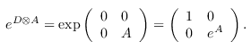
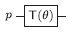
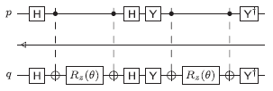
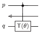
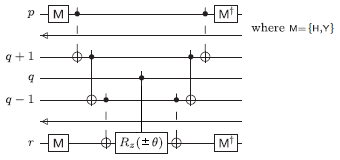
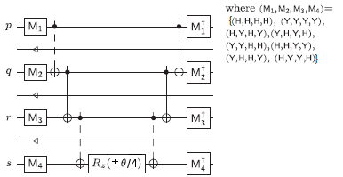
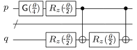
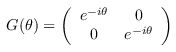
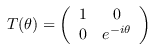

| Safe Haskell | None |
|---|
Algorithms.GSE.JordanWigner
Contents
- Overview
- Correctness of the templates
- Alternate Coulomb templates
- General-purpose auxiliary functions
- Scalars
- Basic Gates
- Basic operators
- Tensors of basic operators
- Linear combinations of tensors
- Jordan-Wigner representation
- Second quantized interaction terms
- XYZD decomposition
- Exponentiation and circuit generation
- Generate top-level templates
- Testing
Description
This module provides the Jordan-Wigner transformation and symbolic derivation of circuit templates for second quantized interaction terms. It is essentially a fully automated version of the calculations from
- James D. Whitfield, Jacob Biamonte, and Alán Aspuru-Guzik. "Simulation of electronic structure Hamiltonians using quantum computers." Molecular Physics 109(5):735–750, 2011. See also http://arxiv.org/abs/1001.3855v3.
- power :: Int -> a -> [a]
- consecutive_pairs :: [a] -> [(a, a)]
- type Scalar = Complex Double
- i :: Scalar
- rotZ_at :: Double -> Qubit -> Circ ()
- gse_G_at :: Double -> Qubit -> Circ ()
- gse_T_at :: Double -> Qubit -> Circ ()
- gse_Y_at :: Qubit -> Circ ()
- data Op
- data Scaled a = Scaled Scalar a
- mult :: Op -> Op -> Scaled Op
- type Tensor = [Op]
- normalize_tensor :: Tensor -> Tensor
- tensor_id :: Tensor
- mult_tensor :: Tensor -> Tensor -> Scaled Tensor
- mult_scaled_tensor :: Scaled Tensor -> Scaled Tensor -> Scaled Tensor
- type TensorLC = Map Tensor Scalar
- lc_zero :: TensorLC
- lc_insert :: TensorLC -> Scaled Tensor -> TensorLC
- lc_from_list :: [Scaled Tensor] -> TensorLC
- lc_to_list :: TensorLC -> [Scaled Tensor]
- jw :: Int -> Int -> Scaled Tensor
- jw_dagger :: Int -> Int -> Scaled Tensor
- one_electron_operator_simple :: Int -> Int -> Scaled Tensor
- two_electron_operator_simple :: Int -> Int -> Int -> Int -> Scaled Tensor
- one_electron_operator :: Int -> Int -> TensorLC
- two_electron_operator :: Int -> Int -> Int -> Int -> TensorLC
- decompose_basis :: Op -> [Scaled Op]
- decompose_tensor :: Tensor -> TensorLC
- decompose_tensor_lc :: TensorLC -> TensorLC
- exponentiate_simple :: Scaled Tensor -> Double -> [Qubit] -> [Qubit] -> Circ ()
- exponentiate :: TensorLC -> Double -> [Qubit] -> [Qubit] -> Circ ()
- one_electron_circuit :: Double -> Int -> Int -> [Qubit] -> [Qubit] -> Circ ()
- two_electron_circuit :: Double -> Int -> Int -> Int -> Int -> [Qubit] -> [Qubit] -> Circ ()
- two_electron_circuit_orthodox :: Double -> Int -> Int -> Int -> Int -> [Qubit] -> [Qubit] -> Circ ()
- show_one_electron :: Format -> GateBase -> Int -> Int -> IO ()
- show_two_electron :: Format -> GateBase -> Int -> Int -> Int -> Int -> IO ()
- show_two_electron_orthodox :: Format -> GateBase -> Int -> Int -> Int -> Int -> IO ()
Overview
For a given tuple of orbital indices, (p,q) in case of one-electron interactions, or (p,q,r,s) in case of two-electron interactions, we first calculate the Jordan-Wigner transformation of the second quantized hermitian interaction terms
ap†ap,
ap†aq + aq†ap,
ap†aq†aqap,
ap†aq†aras + as†ar†aqap.
Next, we decompose each operator into a linear combination H = λ1M1 + ... + λnMn of mutually commuting hermitian tensors. At this point, each summand Mj in the linear combination will be a tensor product of the following operators (not necessarily in this order):
- an even number (possibly zero) of Pauli X operators;
- an even number (possibly zero) of Pauli Y operators;
- zero or more Pauli Z operators, and
- zero or more D operators, where D = σ−σ+ = (I−Z)/2.
Note that there may be zero terms in the summation; this happens, for example, for ap†ap†aras, because two electrons cannot occupy the same spin orbital due to their fermionic nature. In this case, H = 0 and e-iθH = I.
Next, we calculate e-iθH. Because the summands Mj commute, we can exponentiate each summand separately, using the formula e-iθH = e-iθλ1M1⋯e-iθλnMn.
We then generate the circuit for e-iθλjMj by applying a sequence of basis changes until the problem is reduced to a controlled rotation. The basis changes are, in this order:
- Change each Pauli X operator in Mj to a Pauli Z operator, and apply a Hadamard basis change to the corresponding qubit. This uses the relation HXH = Z.
- Change each Pauli Y operator in Mj to a Pauli Z operator, and apply a Y basis change to the corresponding qubit. Note: the Y basis change operator is defined in [Whitfield et al.] as Rx(-π/2) = (I+iX)/√2, or equivalently Y = SHS, and satisfies Y†YY = Z. It should not be confused with the Pauli Y operator.
- If the operator Mj contains one or more Pauli Z operators (including those obtained in steps 1 and 2), then do a basis change by a cascade of controlled-not gates to reduce this to a single Z operator. This uses the relation CNot (Z⊗Z) CNot = I⊗Z.
After these basis changes, the operator Mj consists of exactly zero or one Pauli Z operator, together with zero or more D operators. To see how to translate this into a controlled rotation, note that for any operator A, we have

Therefore, each D operator in Mj turns into a control after exponentiation. The final rotation is then computed by distinguishing two cases:
- If Mj contains a Pauli Z operator, then use the relation e-iθZ = Rz(2θ). In this case, the circuit for e-iθMj is a controlled Rz(2θ) gate in the position of the Z operator, with zero or more controls in the positions of any D operators.
- If Mj does not contain a Pauli Z operator, then the operation to be performed is a phase change e-iθ, controlled by the qubits in the positions of the D operators. Note that there must be at least one D operator in this case. Also note that a controlled e-iθ gate is identical to a T(θ) gate.
Correctness of the templates
As outlined above, the functions in this module generate each circuit from first principles, based on the Jordan-Wigner representation of operators and on algebraic transformations. They do not rely on pre-fabricated circuit templates.
Based on the automated calculations provided by this module, we have found small typos in the 5 templates provided by [Whitfield et al.] (Table 3, or Table A1 in the arXiv version).
- The template for the number-excitation operator is missing a control on its rotation gate.
- In the template for the Coulomb operator, the angles are wrong. Moreover, this program finds a simpler template.
- In the template for the double excitation operator, the angles are wrong; they should be ±θ/4 instead of θ.
The corrected templates generated by our code are as follows:
- Number operator hpp ap†ap.

- Excitation operator hpq ap†aq.

- Coulomb and exchange operators hpqqp ap†aq†aqap.

- Number-excitation operator hpqqr (ap†aq†aqar + ar†aq†aqap). The sign of ±θ depends on the relative ordering of the indices p,q,r.

- Double excitation operator hpqrs (ap†aq†aras + as†ar†aqap). The sign of ±θ/4 in each of the eight terms depends on the relative ordering of the indices p,q,r,s.

Alternate Coulomb templates
As noted above, our algorithm found the following template for the Coulomb operator ap†aq†aqap:
This is simpler than the template given in [Whitfield et al.], even after one accounts for the cost of decomposing the additional controlled T(θ) gate into elementary gates. However, an equivalent circuit can also be given that is more similar to the one in [Whitfield et al.] (but with corrected rotation angles):

We call this the "orthodox" template, because it is closer to the
one specified by Whitfield et al. The program will use the orthodox
template if the command line option --orthodox is given, and it
will use the simplified template otherwise.
General-purpose auxiliary functions
consecutive_pairs :: [a] -> [(a, a)]Source
Extract a list of n-1 consecutive pairs from an n-element list:
consecutive_pairs [] = [] consecutive_pairs [1] = [] consecutive_pairs [1,2] = [(1,2)] consecutive_pairs [1,2,3] = [(1,2),(2,3)] consecutive_pairs [1,2,3,4] = [(1,2),(2,3),(3,4)]
Scalars
type Scalar = Complex DoubleSource
The type of complex numbers. Here, we use a floating point representation, although a symbolic representation would also be possible. Since for the purpose of this algorithm, all denominators are powers of 2, the floating point representation is in fact exact.
Basic Gates
rotZ_at :: Double -> Qubit -> Circ ()Source
Apply a Rz(θ)=e-iθZ/2 gate. The parameter θ is a Bloch sphere angle.

gse_G_at :: Double -> Qubit -> Circ ()Source
Apply a G(θ) gate. This is a global phase change of e-iθ, so this gate only "does" something when it is controlled. Although it is logically a 0-ary gate, we give it a qubit argument to specify where the gate can be drawn in circuit diagrams.

gse_T_at :: Double -> Qubit -> Circ ()Source
Apply a T(θ) gate. This is a Z-rotation, but differs from Rz(-θ) by a global phase.

gse_Y_at :: Qubit -> Circ ()Source
Apply a Y basis change gate. This is defined as Y = SHS, or equivalently,

This should not be confused with the Pauli Y gate.
Basic operators
This type provides a symbolic representation of certain operators, generated by the Pauli operators, P = σ+, and M = σ−. For lack of a better term, we call these the "basic" operators. Note that apart from P and M, all of these are hermitian.
A type to represent scalar multiples. An element of (Scaled
a) is a pair (λ, x) of a complex scalar λ and an element x ∈
a.
mult :: Op -> Op -> Scaled OpSource
Multiplication of basic operators. Note that the product of two basic operators is not usually itself a basic operator, but a scalar multiple thereof. This multiplication encodes the algebraic laws of basic operators in symbolic form.
Tensors of basic operators
We use a list of basic operators to represent a tensor product. The convention is that infinitely many identity operators are implicitly appended at the end of the list.
normalize_tensor :: Tensor -> TensorSource
Normalize a tensor, by stripping away trailing identities.
mult_tensor :: Tensor -> Tensor -> Scaled TensorSource
Multiply two tensors. This returns a scaled tensor.
mult_scaled_tensor :: Scaled Tensor -> Scaled Tensor -> Scaled TensorSource
Multiply two scaled tensors.
Linear combinations of tensors
Jordan-Wigner representation
The next two functions provide the Jordan-Wigner representation of (Fock-space) annihilation and creation operators.
jw :: Int -> Int -> Scaled TensorSource
Construct the Jordan-Wigner annihilation operator ap = IIIIPZZZZZ... for spin-orbital index p. The first parameter is p, and the second one is M (the number of spin-orbitals). Precondition: 0 ≤ p < M.
jw_dagger :: Int -> Int -> Scaled TensorSource
Construct the Jordan-Wigner creation operator ap† = IIIIMZZZZ... for spin-orbital index p. The first parameter is p, and the second one is M (the number of spin-orbitals). Precondition: 0 ≤ p < M.
Second quantized interaction terms
Simple interaction terms
one_electron_operator_simple :: Int -> Int -> Scaled TensorSource
Construct the one-electron second quantized non-hermitianized interaction term ap†aq. The parameters are p,q.
two_electron_operator_simple :: Int -> Int -> Int -> Int -> Scaled TensorSource
Construct the two-electron second quantized non-hermitianized interaction term ap†aq†aras. The parameters are p,q,r,s.
Hermitian interaction terms
one_electron_operator :: Int -> Int -> TensorLCSource
Construct ap†aq if p = q, and ap†aq + aq†ap otherwise.
two_electron_operator :: Int -> Int -> Int -> Int -> TensorLCSource
Construct ap†aq†aras if (p,q) = (s,r), and ap†aq†aras + as†ar†aqap otherwise.
XYZD decomposition
decompose_basis :: Op -> [Scaled Op]Source
Decompose a basic operator into linear combinations of hermitian basic operators. This uses the relations P = 1/2 X + i/2 Y and M = 1/2 X - i/2 Y.
decompose_tensor :: Tensor -> TensorLCSource
Decompose a tensor into a linear combination of hermitian tensors. Due to sign alternation, the individual tensors all come out to commute with each other.
decompose_tensor_lc :: TensorLC -> TensorLCSource
Decompose a linear combination of tensors into a linear combination of hermitian tensors.
Exponentiation and circuit generation
exponentiate_simple :: Scaled Tensor -> Double -> [Qubit] -> [Qubit] -> Circ ()Source
Given a simple hermitian tensor H and an angle θ, generate a circuit for e-iθH. The given list of input qubits is in the same order as the operators in H. Precondition: H is made up of zero or more identity operators and one or more of the operators X, Y, Z, and D. The last parameter is a list of additional controls.
exponentiate :: TensorLC -> Double -> [Qubit] -> [Qubit] -> Circ ()Source
Given a tensor H (already decomposed into commuting simple tensors) and an angle θ, generate a circuit for e-iθH. The given list of input qubits is in the same order as the operators in H.
Generate top-level templates
one_electron_circuit :: Double -> Int -> Int -> [Qubit] -> [Qubit] -> Circ ()Source
one_electron_circuit theta p q
This function recognizes an important special case: if θ=0.0, don't generate any gates at all. The case θ=0.0 frequently arises because of the conversion from spatial orbitals to spin orbitals.
two_electron_circuit :: Double -> Int -> Int -> Int -> Int -> [Qubit] -> [Qubit] -> Circ ()Source
two_electron_circuit theta p q r s
This function recognizes an important special case: if θ=0.0, don't generate any gates at all. The case θ=0.0 frequently arises because of the conversion from spatial orbitals to spin orbitals.
two_electron_circuit_orthodox :: Double -> Int -> Int -> Int -> Int -> [Qubit] -> [Qubit] -> Circ ()Source
Like two_electron_circuit, but use the "orthodox" circuit
template for the Coulomb operator ap†a[sub
q]†aqap. This generates a circuit using
three rotations, similar to [Whitfield et al.], but with corrected
angles,
instead of the simpler circuit that two_electron_circuit would
normally generate:
Testing
We provide two functions, accessible via command line options, that allow the user to display individual templates.
show_one_electron :: Format -> GateBase -> Int -> Int -> IO ()Source
Display the circuit for the hermitianized one-electron interaction, with θ=1.
show_two_electron :: Format -> GateBase -> Int -> Int -> Int -> Int -> IO ()Source
Display the circuit for the hermitianized two-electron interaction, with θ=1.
show_two_electron_orthodox :: Format -> GateBase -> Int -> Int -> Int -> Int -> IO ()Source
Like show_two_electron, but use the "orthodox" template for
the Coulomb operator.